在启用了Istio服务网格的Kubernetes集群中，缺省情况下只能在集群内部访问网格中的服务，要如何才能从外部网络访问这些服务呢？ Kubernetes和Istio提供了NodePort，LoadBalancer，Kubernetes Ingress，Istio Gateway等多种外部流量入口的方式，面对这么多种方式，我们在产品部署中应该如何选择？
本文将对Kubernetes和Istio对外提供服务的各种方式进行详细介绍和对比分析，并根据分析结果提出一个可用于产品部署的解决方案。
说明：阅读本文要求读者了解Kubernetes和Istio的基本概念，包括Pod、Service、NodePort、LoadBalancer、Ingress、Gateway、VirtualService等。如对这些概念不熟悉，可以在阅读过程中参考文后的相关链接。
内部服务间的通信
首先，我们来回顾一下Kubernetes集群内部各个服务之间相互访问的方法。
Cluster IP
Kubernetes以Pod作为应用部署的最小单位。Kubernetes会根据Pod的声明对其进行调度，包括创建、销毁、迁移、水平伸缩等，因此Pod的IP地址不是固定的，不方便直接采用Pod IP对服务进行访问。
为解决该问题，Kubernetes提供了Service资源，Service对提供同一个服务的多个Pod进行聚合。一个Service提供一个虚拟的Cluster IP，后端对应一个或者多个提供服务的Pod。在集群中访问该Service时，采用Cluster IP即可，Kube-proxy负责将发送到Cluster IP的请求转发到后端的Pod上。
Kube-proxy是一个运行在每个节点上的go应用程序，支持三种工作模式：
userspace 模式
该模式下Kube-proxy会为每一个Service创建一个监听端口。发向Cluster IP的请求被Iptables规则重定向到Kube-proxy监听的端口上，Kube-proxy根据LB算法选择一个提供服务的Pod并和其建立链接，以将请求转发到Pod上。 该模式下，Kube-proxy充当了一个四层Load balancer的角色。由于Kube-proxy运行在userspace中，在进行转发处理时会增加两次内核和用户空间之间的数据拷贝，效率较另外两种模式低一些；好处是当后端的Pod不可用时，Kube-proxy可以重试其他Pod。
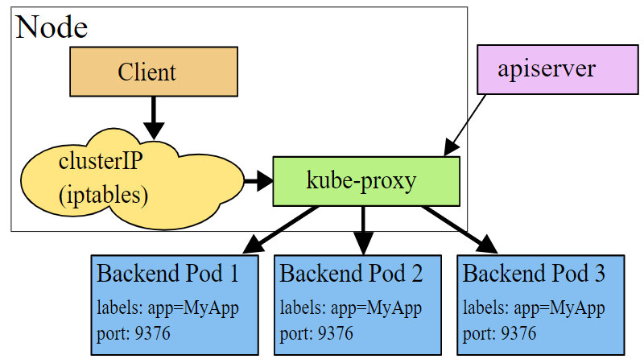
图片来自：Kubernetes官网文档
iptables 模式
为了避免增加内核和用户空间的数据拷贝操作，提高转发效率，Kube-proxy提供了iptables模式。在该模式下，Kube-proxy为service后端的每个Pod创建对应的iptables规则，直接将发向Cluster IP的请求重定向到一个Pod IP。 该模式下Kube-proxy不承担四层代理的角色，只负责创建iptables规则。该模式的优点是较userspace模式效率更高，但不能提供灵活的LB策略，当后端Pod不可用时也无法进行重试。
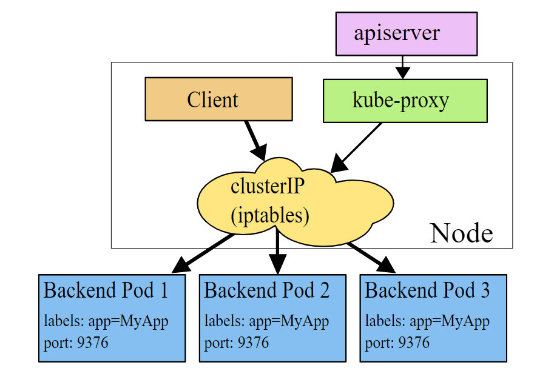
图片来自：Kubernetes官网文档
ipvs 模式
该模式和iptables类似，Kube-proxy监控Pod的变化并创建相应的ipvs rules。ipvs也是在kernel模式下通过netfilter实现的，但采用了hash table来存储规则，因此在规则较多的情况下，Ipvs相对iptables转发效率更高。除此以外，ipvs支持更多的LB算法。如果要设置Kube-proxy为ipvs模式，必须在操作系统中安装IPVS内核模块。
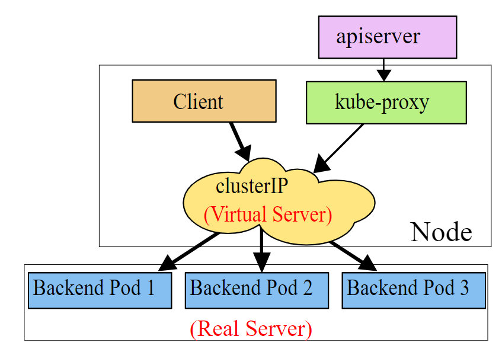
图片来自：Kubernetes官网文档
Istio Sidecar Proxy
Cluster IP解决了服务之间相互访问的问题，但从上面Kube-proxy的三种模式可以看到，Cluster IP的方式只提供了服务发现和基本的LB功能。如果要为服务间的通信应用灵活的路由规则以及提供Metrics collection，distributed tracing等服务管控功能，就必须得依靠Istio提供的服务网格能力了。
在Kubernetes中部署Istio后，Istio通过iptables和Sidecar Proxy接管服务之间的通信，服务间的相互通信不再通过Kube-proxy，而是通过Istio的Sidecar Proxy进行。请求流程是这样的：Client发起的请求被iptables重定向到Sidecar Proxy，Sidecar Proxy根据从控制面获取的服务发现信息和路由规则，选择一个后端的Server Pod创建连接，代理并转发Client的请求。
Istio Sidecar Proxy和Kube-proxy的userspace模式的工作机制类似，都是通过在用户空间的一个代理来实现客户端请求的转发和后端多个Pod之间的负载均衡。两者的不同点是：Kube-Proxy工作在四层，而Sidecar Proxy则是一个七层代理，可以针对HTTP，gRPC等应用层的语义进行处理和转发，因此功能更为强大，可以配合控制面实现更为灵活的路由规则和服务管控功能。
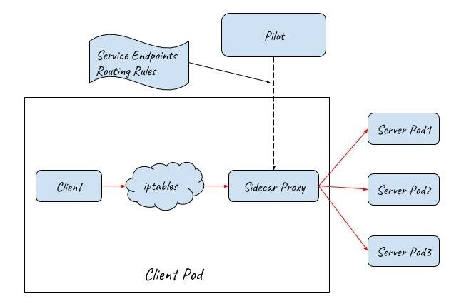
如何从外部网络访问
Kubernetes的Pod IP和Cluster IP都只能在集群内部访问，而我们通常需要从外部网络上访问集群中的某些服务，Kubernetes提供了下述几种方式来为集群提供外部流量入口。
NodePort
NodePort在集群中的主机节点上为Service提供一个代理端口，以允许从主机网络上对Service进行访问。Kubernetes官网文档只介绍了NodePort的功能，并未对其实现原理进行解释。下面我们通过实验来分析NodePort的实现机制。
www.katacoda.com 这个网站提供了一个交互式的Kubernetes playground，注册即可免费实验Kubernetes的相关功能，下面我们就使用Katacoda来分析Nodeport的实现原理。
在浏览器中输入这个网址：https://www.katacoda.com/courses/kubernetes/networking-introduction， 打开后会提供了一个实验用的Kubernetes集群，并可以通过网元模拟Terminal连接到集群的Master节点。
执行下面的命令创建一个nodeport类型的service。
master $ cat nodeport.yaml
apiVersion: v1
kind: Service
metadata:
name: webapp1-nodeport-svc
labels:
app: webapp1-nodeport
spec:
type: NodePort
ports:
- port: 80
nodePort: 30080
selector:
app: webapp1-nodeport
---
apiVersion: extensions/v1beta1
kind: Deployment
metadata:
name: webapp1-nodeport-deployment
spec:
replicas: 2
template:
metadata:
labels:
app: webapp1-nodeport
spec:
containers:
- name: webapp1-nodeport-pod
image: katacoda/docker-http-server:latest
ports:
- containerPort: 80
---
master $ kubectl apply -f nodeport.yaml
查看创建的service，可以看到Kubernetes创建了一个名为webapp-nodeport-svc的service，并为该service在主机节点上创建了30080这个Nodeport。
master $ kubectl get svc
NAME TYPE CLUSTER-IP EXTERNAL-IP PORT(S) AGE
kubernetes ClusterIP 10.96.0.1 <none> 443/TCP 36m
webapp1-nodeport-svc NodePort 10.103.188.73 <none> 80:30080/TCP 3m
webapp-nodeport-svc后端对应两个Pod，其Pod的IP分别为10.32.0.3和10.32.0.5。
master $ kubectl get pod -o wide
NAME READY STATUS RESTARTS AGE IPNODE NOMINATED NODE
webapp1-nodeport-deployment-785989576b-cjc5b 1/1 Running 0 2m 10.32.0.3
webapp1-nodeport-deployment-785989576b-tpfqr 1/1 Running 0 2m 10.32.0.5
通过netstat命令可以看到Kube-proxy在主机网络上创建了30080监听端口，用于接收从主机网络进入的外部流量。
master $ netstat -lnp|grep 30080
tcp6 0 0 :::30080 :::* LISTEN 7427/Kube-proxy
下面是Kube-proxy创建的相关iptables规则以及对应的说明。可以看到Kube-proxy为Nodeport创建了相应的IPtable规则，将发向30080这个主机端口上的流量重定向到了后端的两个Pod IP上。
iptables-save > iptables-dump
# Generated by iptables-save v1.6.0 on Thu Mar 28 07:33:57 2019
*nat
# Nodeport规则链
:KUBE-NODEPORTS - [0:0]
# Service规则链
:KUBE-SERVICES - [0:0]
# Nodeport和Service共用的规则链
:KUBE-SVC-J2DWGRZTH4C2LPA4 - [0:0]
:KUBE-SEP-4CGFRVESQ3AECDE7 - [0:0]
:KUBE-SEP-YLXG4RMKAICGY2B3 - [0:0]
# 将host上30080端口的外部tcp流量转到KUBE-SVC-J2DWGRZTH4C2LPA4链
-A KUBE-NODEPORTS -p tcp -m comment --comment "default/webapp1-nodeport-svc:" -m tcp --dport 30080 -j KUBE-SVC-J2DWGRZTH4C2LPA4
#将发送到Cluster IP 10.103.188.73的内部流量转到KUBE-SVC-J2DWGRZTH4C2LPA4链
KUBE-SERVICES -d 10.103.188.73/32 -p tcp -m comment --comment "default/webapp1-nodeport-svc: cluster IP" -m tcp --dport 80 -j KUBE-SVC-J2DWGRZTH4C2LPA4
#将发送到webapp1-nodeport-svc的流量转交到第一个Pod（10.32.0.3）相关的规则链上，比例为50%
-A KUBE-SVC-J2DWGRZTH4C2LPA4 -m comment --comment "default/webapp1-nodeport-svc:" -m statistic --mode random --probability 0.50000000000 -j KUBE-SEP-YLXG4RMKAICGY2B3
#将发送到webapp1-nodeport-svc的流量转交到第二个Pod（10.32.0.5）相关的规则链上
-A KUBE-SVC-J2DWGRZTH4C2LPA4 -m comment --comment "default/webapp1-nodeport-svc:" -j KUBE-SEP-4CGFRVESQ3AECDE7
#将请求重定向到Pod 10.32.0.3
-A KUBE-SEP-YLXG4RMKAICGY2B3 -p tcp -m comment --comment "default/webapp1-nodeport-svc:" -m tcp -j DNAT --to-destination 10.32.0.3:80
#将请求重定向到Pod 10.32.0.5
-A KUBE-SEP-4CGFRVESQ3AECDE7 -p tcp -m comment --comment "default/webapp1-nodeport-svc:" -m tcp -j DNAT --to-destination 10.32.0.5:80
从上面的实验可以看到，通过将一个Service定义为NodePort类型，Kubernetes会通过集群中node上的Kube-proxy为该Service在主机网络上创建一个监听端口。Kube-proxy并不会直接接收该主机端口进入的流量，而是会创建相应的Iptables规则，并通过Iptables将从该端口收到的流量直接转发到后端的Pod中。
NodePort的流量转发机制和Cluster IP的iptables模式类似，唯一不同之处是在主机网络上开了一个“NodePort”来接受外部流量。从上面的规则也可以看出，在创建Nodeport时，Kube-proxy也会同时为Service创建Cluster IP相关的iptables规则。
备注：除采用iptables进行流量转发，NodePort应该也可以提供userspace模式以及ipvs模式，这里未就这两种模式进行实验验证。
从分析得知，在NodePort模式下，集群内外部的通讯如下图所示：
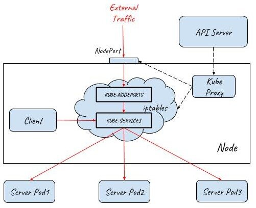
LoadBalancer
NodePort提供了一种从外部网络访问Kubernetes集群内部Service的方法，但该方法存在下面一些限制，导致这种方式主要适用于程序开发，不适合用于产品部署。
- Kubernetes cluster host的IP必须是一个well-known IP，即客户端必须知道该IP。但Cluster中的host是被作为资源池看待的，可以增加删除，每个host的IP一般也是动态分配的，因此并不能认为host IP对客户端而言是well-known IP。
- 客户端访问某一个固定的host IP的方式存在单点故障。假如一台host宕机了，Kubernetes cluster会把应用 reload到另一节点上，但客户端就无法通过该host的nodeport访问应用了。
- 通过一个主机节点作为网络入口，在网络流量较大时存在性能瓶颈。
为了解决这些问题，Kubernetes提供了LoadBalancer。通过将Service定义为LoadBalancer类型，Kubernetes在主机节点的NodePort前提供了一个四层的负载均衡器。该四层负载均衡器负责将外部网络流量分发到后面的多个节点的NodePort端口上。
下图展示了Kubernetes如何通过LoadBalancer方式对外提供流量入口，图中LoadBalancer后面接入了两个主机节点上的NodePort，后端部署了三个Pod提供服务。根据集群的规模，可以在LoadBalancer后面可以接入更多的主机节点，以进行负荷分担。
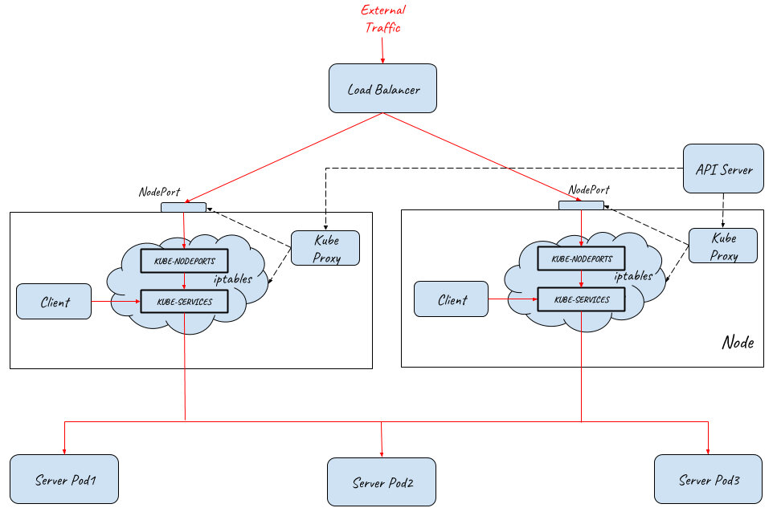
备注：LoadBalancer类型需要云服务提供商的支持，Service中的定义只是在Kubernetes配置文件中提出了一个要求，即为该Service创建Load Balancer，至于如何创建则是由Google Cloud或Amazon Cloud等云服务商提供的，创建的Load Balancer的过程不在Kubernetes Cluster的管理范围中。
目前AWS,Azure,CloudStack,GCE和OpenStack等主流的公有云和私有云提供商都可以为Kubernetes提供Load Balancer。一般来说，公有云提供商还会为Load Balancer提供一个External IP，以提供Internet接入。如果你的产品没有使用云提供商，而是自建Kubernetes Cluster，则需要自己提供LoadBalancer。
Ingress
LoadBalancer类型的Service提供的是四层负载均衡器，当只需要向外暴露一个服务的时候，采用这种方式是没有问题的。但当一个应用需要对外提供多个服务时，采用该方式则要求为每一个四层服务（IP+Port）都创建一个外部Load balancer。
一般来说，同一个应用的多个服务/资源会放在同一个域名下，在这种情况下，创建多个Load balancer是完全没有必要的，反而带来了额外的开销和管理成本。另外直接将服务暴露给外部用户也会导致了前端和后端的耦合，影响了后端架构的灵活性，如果以后由于业务需求对服务进行调整会直接影响到客户端。
在这种情况下，我们可以通过使用Kubernetes Ingress来统一网络入口。Kubernetes Ingress声明了一个应用层（OSI七层）的负载均衡器，可以根据HTTP请求的内容将来自同一个TCP端口的请求分发到不同的Kubernetes Service，其功能包括：
按HTTP请求的URL进行路由
同一个TCP端口进来的流量可以根据URL路由到Cluster中的不同服务，如下图所示：
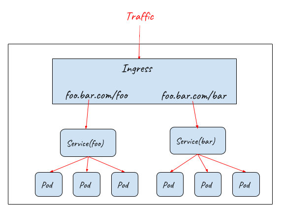
按HTTP请求的Host进行路由
同一个IP进来的流量可以根据HTTP请求的Host路由到Cluster中的不同服务，如下图所示：
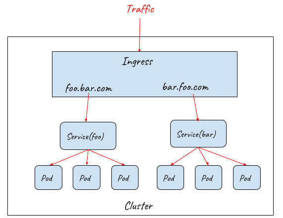
Ingress 规则定义了对七层网关的要求，包括URL分发规则，基于不同域名的虚拟主机，SSL证书等。Kubernetes使用Ingress Controller 来监控Ingress规则，并通过一个七层网关来实现这些要求，一般可以使用Nginx，HAProxy，Envoy等。
虽然Ingress Controller通过七层网关为后端的多个Service提供了统一的入口，但由于其部署在集群中，因此并不能直接对外提供服务。实际上Ingress需要配合NodePort和LoadBalancer才能提供对外的流量入口，如下图所示：
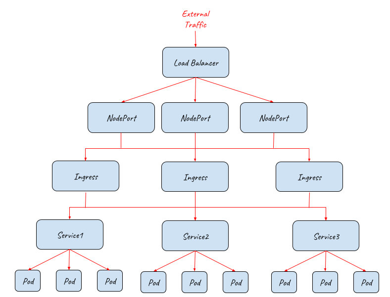
上图描述了如何采用Ingress配合NodePort和Load Balancer为集群提供外部流量入口，从该拓扑图中可以看到该架构的伸缩性非常好，在NodePort，Ingress，Pod等不同的接入层面都可以对系统进行水平扩展，以应对不同的外部流量要求。
上图只展示了逻辑架构，下面的图展示了具体的实现原理：
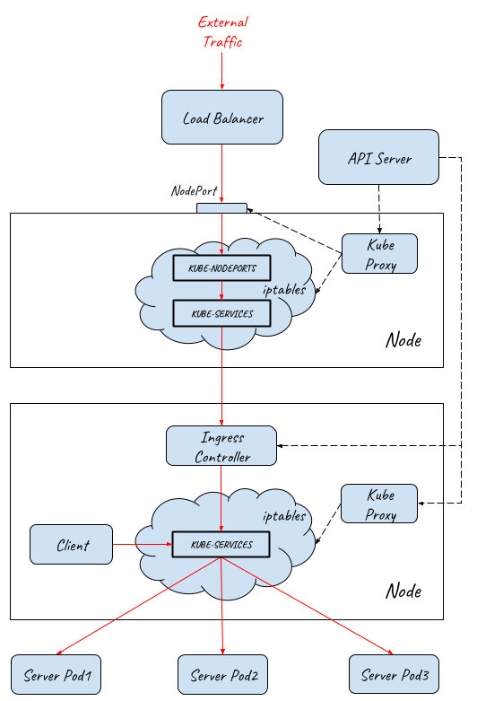
流量从外部网络到达Pod的完整路径如下：
- 外部请求先通过四层Load Balancer进入内部网络
- Load Balancer将流量分发到后端多个主机节点上的NodePort (userspace转发)
- 请求从NodePort进入到Ingress Controller (iptabes规则，Ingress Controller本身是一个NodePort类型的Service)
- Ingress Controller根据Ingress rule进行七层分发，根据HTTP的URL和Host将请求分发给不同的Service (userspace转发)
- Service将请求最终导入到后端提供服务的Pod中 (iptabes规则)
从前面的介绍可以看到，K8S Ingress提供了一个基础的七层网关功能的抽象定义，其作用是对外提供一个七层服务的统一入口，并根据URL/HOST将请求路由到集群内部不同的服务上。
如何为服务网格选择入口网关？
在Istio服务网格中，通过为每个Service部署一个sidecar代理，Istio接管了Service之间的请求流量。控制面可以对网格中的所有sidecar代理进行统一配置，实现了对网格内部流量的路由控制，从而可以实现灰度发布，流量镜像，故障注入等服务管控功能。但是，Istio并没有为入口网关提供一个较为完善的解决方案。
K8s Ingress
在0.8版本以前，Istio缺省采用K8s Ingress来作为Service Mesh的流量入口。K8s Ingress统一了应用的流量入口，但存在两个问题：
- K8s Ingress是独立在Istio体系之外的，需要单独采用Ingress rule进行配置，导致系统入口和内部存在两套互相独立的路由规则配置，运维和管理较为复杂。
- K8s Ingress rule的功能较弱，不能在入口处实现和网格内部类似的路由规则，也不具备网格sidecar的其它能力，导致难以从整体上为应用系统实现灰度发布、分布式跟踪等服务管控功能。
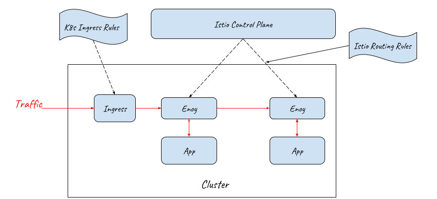
Istio Gateway
Istio社区意识到了Ingress和Mesh内部配置割裂的问题，因此从0.8版本开始，社区采用了 Gateway 资源代替K8s Ingress来表示流量入口。
Istio Gateway资源本身只能配置L4-L6的功能，例如暴露的端口，TLS设置等；但Gateway可以和绑定一个VirtualService，在VirtualService 中可以配置七层路由规则，这些七层路由规则包括根据按照服务版本对请求进行导流，故障注入，HTTP重定向，HTTP重写等所有Mesh内部支持的路由规则。
Gateway和VirtualService用于表示Istio Ingress的配置模型，Istio Ingress的缺省实现则采用了和Sidecar相同的Envoy proxy。
通过该方式，Istio控制面用一致的配置模型同时控制了入口网关和内部的sidecar代理。这些配置包括路由规则，策略检查、Telementry收集以及其他服务管控功能。
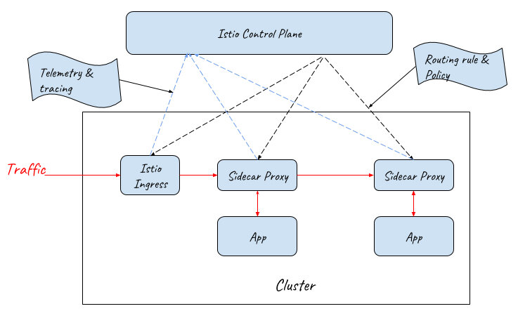
应用对API Gateway的需求
采用Gateway和VirtualService实现的Istio Ingress Gateway提供了网络入口处的基础通信功能，包括可靠的通信和灵活的路由规则。但对于一个服务化应用来说，网络入口除了基础的通讯功能之外，还有一些其他的应用层功能需求，例如：
- 第三方系统对API的访问控制
- 用户对系统的访问控制
- 修改请求/返回数据
- 服务API的生命周期管理
- 服务访问的SLA、限流及计费
- ….
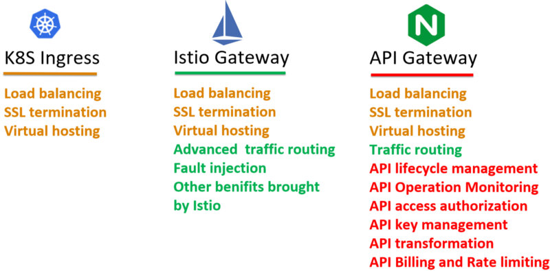
API Gateway需求中很大一部分需要根据不同的应用系统进行定制，目前看来暂时不大可能被纳入K8s Ingress或者Istio Gateway的规范之中。为了满足这些需求，涌现出了各类不同的k8s Ingress Controller以及Istio Ingress Gateway实现，包括Ambassador ，Kong, Traefik,Solo等。
这些网关产品在实现在提供基础的K8s Ingress能力的同时，提供了强大的API Gateway功能，但由于缺少统一的标准，这些扩展实现之间相互之间并不兼容。而且遗憾的是，目前这些Ingress controller都还没有正式提供和Istio 控制面集成的能力。
备注：
- Ambassador将对Istio路由规则的支持纳入了Roadmap https://www.getambassador.io/user-guide/with-istio/
- Istio声称支持Istio-Based Route Rule Discovery (尚处于实验阶段) https://gloo.solo.io/introduction/architecture/
采用API Gateway + Sidecar Proxy作为服务网格的流量入口
在目前难以找到一个同时具备API Gateway和Istio Ingress能力的网关的情况下，一个可行的方案是使用API Gateway和Sidecar Proxy一起为服务网格提供外部流量入口。
由于API Gateway已经具备七层网关的功能，Mesh Ingress中的Sidecar只需要提供VirtualService资源的路由能力，并不需要提供Gateway资源的网关能力，因此采用Sidecar Proxy即可。网络入口处的Sidecar Proxy和网格内部应用Pod中Sidecar Proxy的唯一一点区别是：该Sidecar只接管API Gateway向Mesh内部的流量，并不接管外部流向API Gateway的流量；而应用Pod中的Sidecar需要接管进入应用的所有流量。
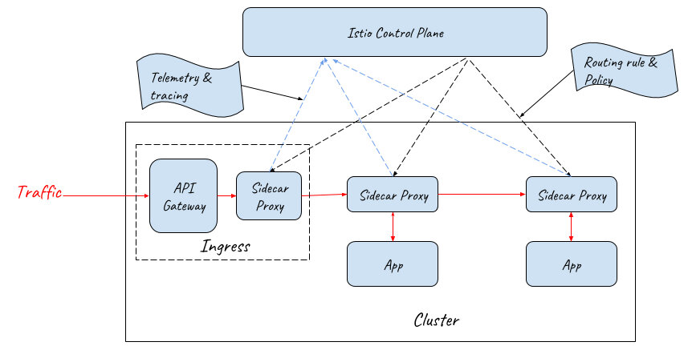
备注：在实际部署时，API Gateway前端需要采用NodePort和LoadBalancer提供外部流量入口。为了突出主题，对上图进行了简化，没有画出NodePort和LoadBalancer。
采用API Gateway和Sidecar Proxy一起作为服务网格的流量入口，既能够通过对网关进行定制开发满足产品对API网关的各种需求，又可以在网络入口处利用服务网格提供的灵活的路由能力和分布式跟踪，策略等管控功能，是服务网格产品入口网关的一个理想方案。
性能方面的考虑：从上图可以看到，采用该方案后，外部请求的处理流程在入口处增加了Sidecar Proxy这一跳，因此该方式会带来少量的性能损失，但该损失是完全可以接受的。
对于请求时延而言，在服务网格中，一个外部请求本来就要经过较多的代理和应用进程的处理，在Ingress处增加一个代理对整体的时延影响基本忽略不计，而且对于绝大多数应用来说，网络转发所占的时间比例本来就很小，99%的耗时都在业务逻辑。如果系统对于增加的该时延非常敏感，则建议重新考虑该系统是否需要采用微服务架构和服务网格。
对于吞吐量而言，如果入口处的网络吞吐量存在瓶颈，则可以通过对API Gateway + Sidecar Proxy组成的Ingress整体进行水平扩展，来对入口流量进行负荷分担，以提高网格入口的网络吞吐量。